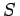
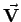
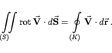
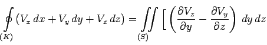
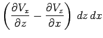
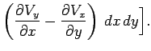

Inhalt Index DeskTop Bronstein

 Vektoranalysis und Feldtheorie Integration in Vektorfeldern Integralsätze
Vektoranalysis und Feldtheorie Integration in Vektorfeldern Integralsätze


Der Integralsatz von STOKES liefert den Zusammenhang zwischen einem Oberflächenintegral über die gekrümmte und orientierte Fläche , in der das Vektorfeld  definiert ist, und dem Umlaufintegral über die Umrandungskurve K der Fläche . Der Umlaufsinn von K wird so gewählt, daß der Umlaufsinn der Berandung des Oberflächenelements mit der Flächennormalen eine Rechtsschraube bildet. Die vektorielle Feldfunktion sei stetig und besitze stetige partielle Ableitungen 1. Ordnung.
|  | (13.120a) |
Der vektorielle Fluß der Rotation durch eine Fläche , die von der geschlossenen Kurve K umrandet wird, ist gleich dem Umlaufintegral des vektoriellen Feldes über die Kurve K.
In kartesischen Koordinaten gilt:
|  | + |  | |
| + |  | (13.120b) |
Im ebenen Falle geht der Integralsatz von STOKES ebenso wie der von GAUSS in die Integralformel (13.118) von GAUSS über.